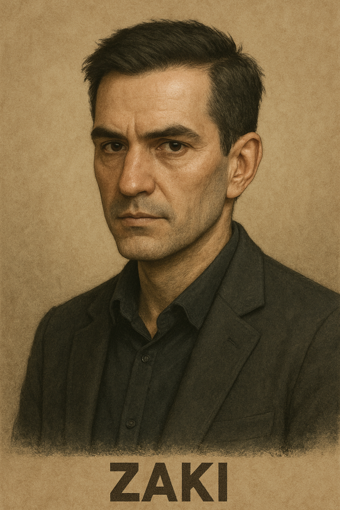
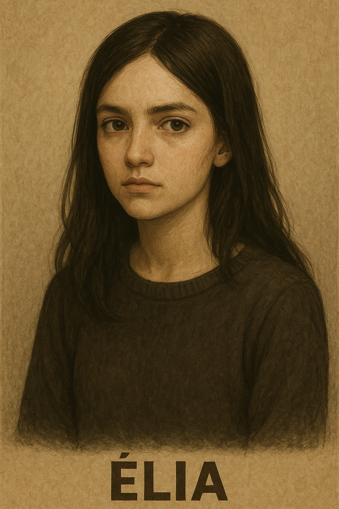
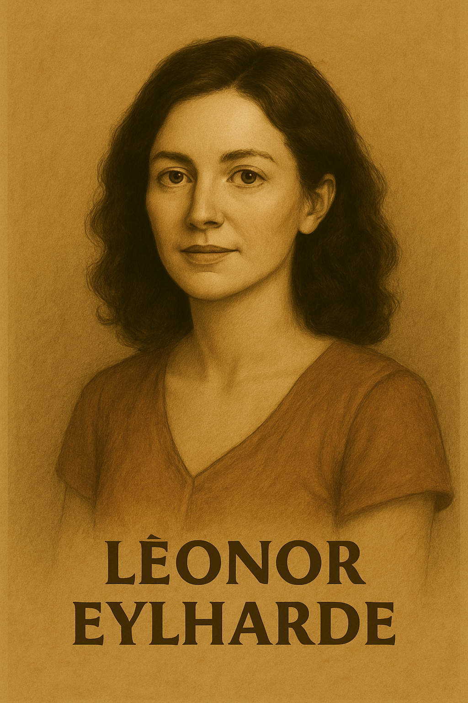
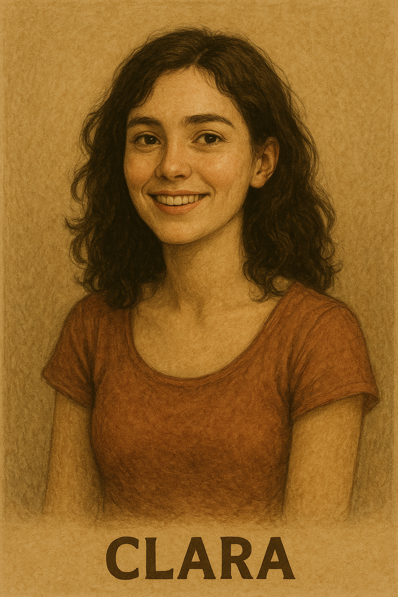
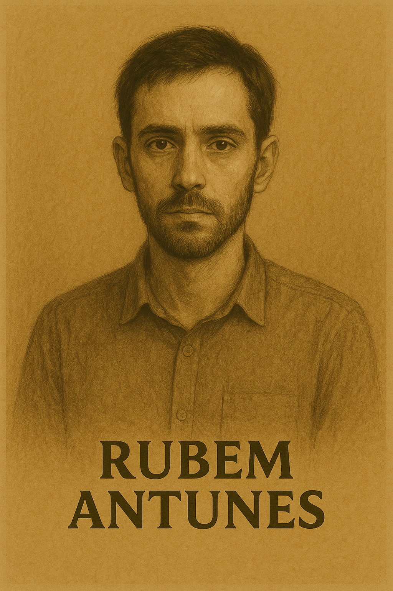

Élia encontra caderno com símbolos químicos e a frase: "Silêncio = Eficiência Moral."
Jantar em família. Zaki comenta a morte de Clara com frieza calculada. Léonor estranha sua postura.
Compra remédio. Diálogo paranoico com amiga: “Acho que ele me segue com os olhos.”
Escreve no caderno criptografado: “1 – Santiago
. Efeito em 5 dias.” Léonor o observa escondida. -> Viegenerre
Conversa com Dr. Guilherme sobre toxinas inaláveis. Conexão com possíveis métodos invisíveis de assassinato.
Rubem é designado oficialmente para o caso do furto na UFFI. Vê Zaki na biblioteca novamente.
Cap 10
Morte de Clara Santos: "Infarto" em casa. Exame preliminar não aponta violência.
Cap 11
Velório de Clara: Zaki faz discurso analítico. Élia observa o incômodo dos outros com sua frieza.
Cap 12
Cap 13
14 DE ABRIL
18 DE ABRIL
22 DE ABRIL
Clara Santiago
Zaki
Rubem Antunes
Rubem Antunes
Cap 7
Cap 8
Cap 9
Zaki
Nome: Prof. Dr. Zaki Eylharde
Idade: 47 anos
Ocupação: Professor titular de Ética Aplicada e Epistemologia Contemporânea na Universidade Federal de Foz do Iguaçu (UFFI)
Reconhecido por: Conferências internacionais, artigos premiados, ativismo educacional.
Aparência: Bem-apessoado, sempre de terno, voz calma, gestos suaves.
Ponto fraco: A filha.
Modus operandi (M.O.): Asfixia química sem traços evidentes; vítima morre em casa, sozinha, de "causas naturais" (envenenamento lento ou paralisia).
Élia
Élia Eylharde
- Estudante do último ano do ensino médio.
- Fascinada por literatura gótica e existencialismo.
- Super dotada, mas introspectiva. Sonha em estudar fora.
- Admira o pai mas começa a duvidar dele conforme a história avança.
- Ela se torna a “voz do leitor” ao começar a desconfiar do que está por trás da fachada da família.
PERSONAGENS
Léonor
NOME: Léonor Eylharde
Idade: 43
- Escritora de filosofia moral e editora acadêmica.
- Vê Zaki como um pilar intelectual e emocional.
Mas começa a perceber falhas éticas que sempre ignorou.
- O arco dela é de negação → dúvida → culpa → libertação.
- No final, talvez seja ela quem faz justiça silenciosa, sem que o leitor saiba ao certo.
Élia Eylhard
Clara
Nome: Clara Santos
Idade: 19 anos
Ocupação: Estudante de Filosofia (2º ano) na Universidade Federal de Foz do Iguaçu (UFFI)
Reconhecida por: Ensaios curtos e poéticos sobre percepção, beleza e caos; participação em grupos de fenomenologia; falas espontâneas que misturam ciência, mito e metafísica.
Aparência: Jovem de semblante sereno, olhar sempre curioso; cabelos presos de qualquer jeito, roupas simples e confortáveis; uma aura permanente de contemplação.
Visão de mundo: Acredita em aleatoriedade, ilusões, limites da mente humana e erros de análise; enxerga beleza no caos e significado em fenômenos naturais — do pôr do sol às estruturas do DNA.
Ponto fraco: A incapacidade de lidar com a crueldade real do mundo; vulnerável a pessoas que escondem sua escuridão com inteligência.
Contraste simbólico: Representa a beleza efêmera e a sensibilidade; contraponto natural à frieza racional e calculada de Zaki.
Marca pessoal: O hábito de encontrar poesia em qualquer coisa — inclusive no fim inevitável do universo.
Rubem
Nome: Rubem Antunes
Idade: 28 anos
Ocupação: Investigador da Polícia Civil – Núcleo de Crimes Sensíveis
Formação: Bacharel em Filosofia (UFFI) + Curso de Investigação Criminal
Reconhecido por: Trabalho cirúrgico, raciocínio dedutivo, empatia controlada
Aparência: Magro, sempre com olheiras leves; barba curta; roupas simples, mas arrumadas.
Presença: Silencioso, observa mais do que fala; gestos precisos; olhar de quem desmonta narrativas.
Ponto fraco: O passado (esposa falecida).
Motivação oculta: Evitar que outros passem pelo que ele passou — mesmo que isso custe sua sanidade.
Conversa sobre Nietzsche. Insinuações sobre “funções ineficientes”. Cena ambígua com Carlos Mendes.
4 DE ABRIL
5 DE ABRIL
8 DE ABRIL
7 DE ABRIL
9 DE ABRIL
Zaki
Élia
Rubem Antunes
Cap 2
Cap 1
Cap 3
🗓️ CONTEXTO TEMPORAL
- Ano: 2005
- Cidade: Foz do Iguaçu (PR)
- Cenário: Universidade Federal (UFFI), clima úmido subtropical
- Período: Abril a Agosto (final do semestre letivo → recesso acadêmico → retorno das aulas)
10 DE ABRIL
11 DE ABRIL
Cap 6
Cap 5
6 DE ABRIL
Cap 4
Élia conta o convívio na universidade. Conversa com clara sobre a estranha percepção da beleza na vida. Zaki demonstra comportamentos patológicos após vouvir menção à Clara
Observa mudança no pai. Encontra no espelho do banheiro: “Moralidade é custo energético.”
Vai à UFFI por furto. Encontra Zaki na biblioteca lendo Nietzsche. Percebe algo "cirurgicamente apático" nele.
FLUXO DA HOSTÓRIA
Cena inicial
Zaki prepara o cefé com medidas perfeitas e debate Kant com Élia. Há um frasco de amônia escondido na cozinha.
ANO: 2005
ATO I: ESTABILIDADE APARENTE
Formato de referência:
Capítulos curtos (~3-6 páginas), alternância de pontos de vista (Zaki, Élia, Rubem e eventualmente Léonor).
Estilo cinematográfico + filosófico. Ideal para futura adaptação.
Estrutura baseada em um romance policial-filosófico, estimado entre 280 a 320 páginas (~80.000 palavras). Modelo pensado para leitura intensa, com ritmo narrativo de tensão psicológica crescente e pontos de virada cirúrgicos.
Zaki Eylhard
EPÍLOGO: DEPOIS DO FIM
Élia
Élia
Cap 35
Cap 36
Ano: 2010
15 DE SETEMBRO DE 2010
15 DE OUTUBRO DE 2010
📊 PROJEÇÃO DE ESTRUTURA:
Total estimado: 30 a 40 capítulos
- Capítulos curtos = ritmo veloz + impacto + cliffhangers.
- Divisão: 3 atos principais + epílogo
- Duração temporal: 5 a 6 meses dentro da história.
Interrogatório: Zaki cita Foucault: "Quem define o crime? O Estado ou a eficiência histórica?"
Zaki é solto por falta de provas físicas. Cena final: prepara chá enquanto escreve carta para Élia.
Élia (22 anos) lança "A Ética da Lâmina Silenciosa" em Berlim.
Morte idêntica em Brasília: vítima ligada ao Ministério da Educação. Última frase do livro. "Para alguns, o silêncio é apenas ausência de som. Para outros, é o fim de um julgamento."
Rubem Antunes
Cap 33
Rubem Antunes
Cap 31
Cap 32
“Você não mataria alguém se soubesse que isso salvaria cem vidas?”
“Você acha que eu sou mal porque sou eficiente?”
Cap 34
Léonor
Rubem Antunes
Cap 27
Cap 28
Élia
Léonor
Confronto Rubem x Élia: Ele mostra provas; ela revela diário.
Quarta morte: Marcos (irmão de Léonor). Zaki o via como "influência negativa para Élia."
Rubem prende Zaki com base no padrão + diário. Mídia repercute: "Professor brilhante acusado."
Cap 29
Cap 30
Élia
Rubem Antunes
Rubem infiltra-se em palestra de Zaki na PUC-PR. Ouve: "O mal é uma ferramenta de ordem."
Élia hackeia notebook do pai: diário codificado com nomes das vítimas.
8 DE AGOSTO
2 DE AGOSTO
5 DE AGOSTO
Cap 26
ATO III: COLAPSO SILENCIOSO
Zaki
10 DE AGOSTO
12 DE AGOSTO
25 DE JULHO
29 DE JULHO
10 DE JULHO
Cap 24
4 DE JULHO
Zaki investiga Rubem: descobre morte da esposa por erro médico (2003).
Rubem visita os Eylharde: Zaki oferece chá enquanto discute Hegel. Tensão subliminar.
Terceira morte: Prof. Renata Torres (rival acadêmica). Sobrevive 6h, diz a Rubem: "Ele sorri como se Deus fosse seu estagiário."
Rubem acha artigo de Zaki (2001): "Purificação Ética de Sistemas Ineficientes" (trechos idênticos ao M.O.).
Cap 25
8 DE JULHO
Léonor
Rubem Antunes
Rubem Antunes
Léonor ouve Zaki falando ao telefone: "O próximo é inevitável."
Rubem Antunes
Cap 20
Cap 21
Cap 22
Cap 16
Cap 23
16 DE MAIO
25 DE MAIO
Rubem Antunes
Rubem Antunes
Flashback Zaki: Justifica morte de Carlos ("Desviava recursos para medicamentos da filha").
Cap 17
Cap 18
Cap 19
Segunda morte: Carlos Mendes (servidor da UFFI) morre "de gripe". Zaki visitou-o no hospital (15h).
Rubem reabre caso Clara com ajuda do legista Dr. Guilherme (suspeita de toxina).
Cap 15
28 DE JUNHO
20 DE JUNHO
7 DE JUNHO
15 DE MAIO
Élia pergunta sobre anotações. Zaki responde: "São equações do equilíbrio social, querida."
Rubem descobre padrão: todas as vítimas criticaram Zaki publicamente.
30 DE ABRIL
Adicionar mais dias, está com lacunas demais
Rubem Antunes
Zaki
Élia
Zaki
Zaki
Zaki
Cap 14
2 DE MAIO
ATO II: ESTRANGULAMENTO MORAL
Rubem Antunes
Rubem Antunes
Élia
Élia



⚠️ AJUSTES CHAVE
-
Cronologia das mortes:
- Clara (Abr) → Carlos (Mai) → Renata (Jul) → Marcos (Ago)
Justificativa: Intervalos crescentes mostram Zaki refinando o método.
- Clara (Abr) → Carlos (Mai) → Renata (Jul) → Marcos (Ago)
-
Eventos reais de 2005:
- Crise política (mensalão) → Zaki comenta: "O Brasil é um laboratório de ineficiência moral".
- Furacão Katrina (Ago) → notícias na TV durante interrogatório.
-
Tempo de investigação:
- Rubem leva 3 semanas para vincular Clara a Carlos (exames toxicológicos demorados).
- Período de 10 dias entre morte de Renata e descoberta do artigo (busca em arquivos físicos).
🌦️ DETALHES DE AMBIENTAÇÃO TEMPORAL
- Abril: Início do outono, chuvas intensas em Foz do Iguaçu → simbolismo da "limpeza".
- Maio-Junho: Recesso acadêmico → Zaki viaja para congresso (cobertura perfeita).
- Julho: Festival de inverno na cidade → contraste com a frieza das mortes.
- Agosto: Retorno das aulas → tensão máxima no campus.
- 2010: Copa do Mundo na África do Sul → pano de fundo do epílogo.


1. Inteligência
- Rápido, intuitivo, com um pensamento lateral que irrita colegas.
- Lê filosofia como quem lê manual de instruções.
- Forte sensibilidade estética (música, silêncio, gestos humanos).
2. Personalidade
- Introvertido de modo funcional.
- Não confia em estruturas — apenas em pessoas específicas.
- Incapaz de ser indiferente ao sofrimento alheio.
3. Traumas
- Esposa morreu por erro médico (2003).
- A investigação interna foi arquivada.
- Ele assistiu ao colapso do sistema e jurou que não deixaria isso se repetir.
4. Ambiguidade moral
Rubem tem pensamentos perigosamente parecidos com os de Zaki:
“Talvez alguns males realmente precisem ser removidos.
Mas eu não tenho o direito de ser o cirurgião.”
Ele se segura à moralidade como quem se agarra a um corrimão numa escada escura.
5. Vício pessoal
- Usa notas adesivas por toda a casa, cada uma com perguntas filosóficas.
- Só dorme ouvindo gravações antigas da esposa lendo poemas.
6. Tique verbal
- Quando percebe contradição, sorri de lado e repete:
“Isso não fecha. Nada que não fecha é natural.”